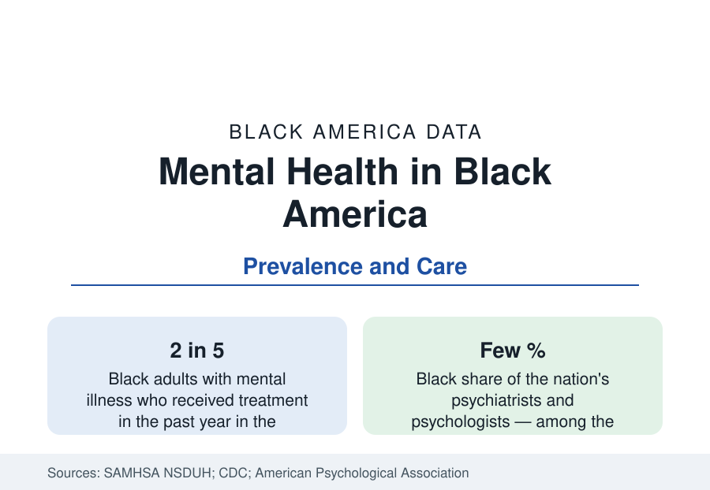

Black Public Health
Black Mental Health: Prevalence, Treatment, and the Provider Gap
Black adults report serious mental illness at rates near the national figure but receive treatment at lower rates — from a provider workforce that is a few percent Black. The federal data.

Roughly one in five Black adults experiences mental illness in a given year in the federal survey data — a share comparable to the nation's — and about one in twenty experiences serious mental illness that substantially interferes with daily life. The distinctive Black mental health data are not in the prevalence tables, which run near or modestly below national rates in most categories. They are in the course and care tables: conditions that persist longer untreated, treatment received at lower rates and ended earlier, and a clinical workforce in which Black providers form only a few percent. This article reports the prevalence, treatment, and workforce data.
Prevalence and Course
The National Survey on Drug Use and Health and the earlier comorbidity surveys converge on a pattern the literature calls the prevalence-course split. Black adults report lifetime and past-year rates of most common disorders — depression, anxiety disorders, post-traumatic stress — at levels equal to or below White rates in the survey record. But among those who do experience a disorder, the clinical course measures worse: episodes last longer, symptoms rate more severe and disabling, and the probability that a disorder becomes chronic runs higher. Researchers attribute the split to the same mechanism the treatment data show directly: a longer average delay between onset and first treatment, so that conditions present to care later and harder. Protective factors in the literature — religious participation, extended-family support structures of the households data — are credited with part of the lower measured onset.
Treatment: The Access Numbers
In the federal surveys, roughly two in five Black adults with mental illness received any mental health treatment in the past year, against about half of adults overall and a higher share among White adults; for serious mental illness the gap narrows but persists. The treatment received differs in kind as well: medication without accompanying psychotherapy is more common in the Black treatment data, specialty-sector care less common, and primary care the default site. The stated barriers, in the surveys' own reason codes, run from cost and coverage — the insurance profile applies here directly — to provider availability, to a documented reluctance rooted in prior experience of the care system and in community stigma measures, which the attitude surveys show declining across generations. Telehealth's expansion registered in the utilization data as a partial offset, raising Black treatment rates in the categories it reached.
Youth: The Trend That Changed
The youth series carries the section's most concerning trend. Suicide rates among Black children and adolescents, historically far below national youth rates, have risen across the past two decades at a pace exceeding other groups': research in the pediatric literature found the suicide rate for Black children aged 5 to 12 running at roughly twice the rate for White children of the same ages in recent data — a reversal of the historical pattern — and Black adolescents now record rates approaching the national youth figure. Emergency department data for self-harm visits by Black girls showed among the sharpest increases of any demographic in the pandemic-era surveillance. The data have reorganized the research agenda: screening instruments validated on the populations most at risk, school-based identification, and the youth provider pipeline are the tracked response categories.
The Provider Workforce
The clinical workforce explains part of the care pattern structurally. Black Americans form roughly 2 to 4 percent of the nation's psychiatrists and psychologists in the professional associations' workforce counts — among the lowest representation of any health profession relative to population — with somewhat higher shares among social workers and counselors, the professions that deliver much of the actual therapy hours. The research on provider-patient matching finds the familiar effects: higher engagement and retention when patients who prefer a same-background provider can find one, and wait lists measured in months where they cannot. The pipeline runs through graduate psychology and medical training, where Black enrollment shares remain in the mid-single digits — an education-section statistic with direct public-health consequences in this one.
Reading the Mental Health Data
Summarized: prevalence near parity, course more severe, treatment later and thinner, youth risk converging upward, and the thinnest provider representation in medicine. The Black mental health profile is the public health section's clearest demonstration that access is not a single variable: coverage, supply, trust, and time-to-care each carry their own numbers, and the outcome gaps live in their sum.
More in Black Public Health
Hypertension Among Black Adults: Prevalence, Control, and Consequences
About 55 percent of Black adults have hypertension — the highest rate of any U.S. group. Prevalence, onset, control, and the stroke, heart, and kidney consequences in the data.
Diabetes Among Black Adults: Prevalence and Complications
Nearly one in five Black adults has diabetes, diagnosed or undiagnosed — and its complications fall with particular weight. The CDC data on prevalence, control, and outcomes.
Black Life Expectancy: The Gap at Birth and Its Causes
Black life expectancy at birth is about 73 years, roughly five years below the national figure — the summary measure of every health gap in this section. The CDC data.
Source: SAMHSA, National Survey on Drug Use and Health; CDC, National Center for Health Statistics; National Comorbidity Survey literature; APA workforce data.